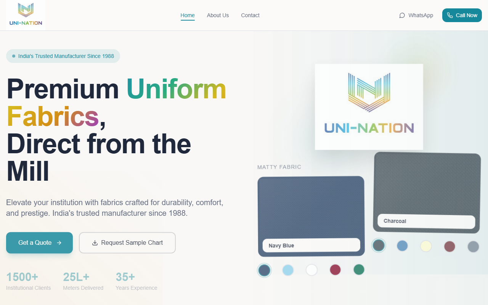

The schedule / Entry 03 / Family business
Uni-Nation Digital.
Being repaireduni-nation.in / the inventory app is offline while a deploy fix ships
The mill from chapter 4. My family has manufactured uniform fabrics in Maharashtra since 1988. I built its digital side: a public catalogue, an inventory system, and stock entry that works the way the warehouse actually works: by voice, in Hindi.
P. Ashok Kumar, that's the business name, after my grandfather. Started in Ulhasnagar, Maharashtra, manufacturing uniform fabrics: school uniforms, corporate uniforms, industrial workwear. The factory is still in Ulhasnagar. The office is in Kalbadevi, Mumbai. My dad built it up over three decades. I grew up around the looms, the dye lots, and the buyers who wanted the same shade of navy they got last year.
After college I joined full-time as Accounting and Sales Manager. I handled the books, managed client relationships, and pushed us into garment manufacturing: finished uniforms, not just the raw fabric. That stretch taught me more about running a business than any degree. Eventually I moved to the UK for my master's, but I never really left. I still help with the bigger finance and strategy calls, and I built and run everything digital.
The business ran on word-of-mouth and trade relationships for decades. No website, no digital catalogue, no way for new customers to find us. uni-nation.in changed that: fabric detail pages, colour swatch selectors, downloadable shade cards, and enough SEO to actually show up when someone searches for uniform fabric manufacturers in India.
- C.1Digital swatch selectorDistributors used to rely on physical swatch books shipped across the country. The digital catalogue filters hundreds of variants by composition, GSM and weave, instantly.
- C.2Static and fastNext.js static generation keeps the catalogue under 400ms on India's wildly uneven mobile networks. Each product page renders its own weave pattern in CSS: knit loops for Matty, diagonal twill for Samray.
- C.3B2B lead pipelineThe sample-request flow routes distributor leads straight to the sales team's inbox and WhatsApp. Lead capture through Formspree, eighteen shade card PDFs behind it.

The stock ledger lived in notebooks and in people's heads. Around 2,000 products across four fabric lines and their colourways, and the only person who knew what was actually on the shelf was whoever last walked past it. Standard inventory software failed here for one physical reason: warehouse workers hold fabric rolls in both hands. Nobody is stopping to type into a form.
So voice is the input. A worker taps once, says what came in or went out, in Hindi, and the system does the rest. The parser understands fabric units like thaan, taaka and metre, reads Hindi numbers, and corrects the speech-to-text errors that fabric names always cause. Behind it sits a 30,000+ line PWA with the sales history cut into dashboards: which lines move, which customers slow-pay, what to weave next. About $2m of sales data, tracked properly for the first time.
"Samray navy blue, teen thaan aaya" (three rolls of Samray navy came in)
You can play with a working replica of this in chapter 4 of the homepage.
| Line | Used for | Spec | |
|---|---|---|---|
| Matty | School polos, sportswear, event tees. The workhorse | 180 GSM / 58" | |
| Samray | School trousers, blazers, formal sets. The best-seller, nineteen colours | 220 GSM / 58" | |
| Trovine | Hospital scrubs, industrial workwear, government contracts | 200 GSM / 60" | |
| Filafil | Dress shirts and office wear. Looks more expensive than it is | 160 GSM / 58" | |
| Four lines, one family | Distribution across India | ||
The family business is where I first learned that the best problems live between departments, in the gaps no one owns.
| 01 | OpsPilot | The AI that answers my messages: 6,124+ documents, live finance data, one-click approval. | Production |
| 02 | Trading Bot | Four AI agents that veto my trades. 115+ sessions, zero impulsive trades let through. | Paper trading |
| 04 | WhatsApp Smart | A Chrome extension that gives WhatsApp scheduling, AI replies and summaries. | Prototype |
| 05 | SCS Cockpit | The study engine I built for my own CIMA Strategic Case Study. I passed. | Retired, job done |